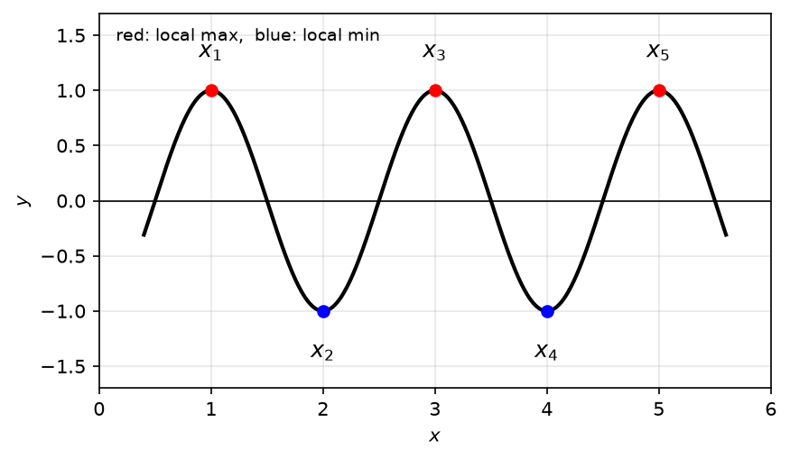
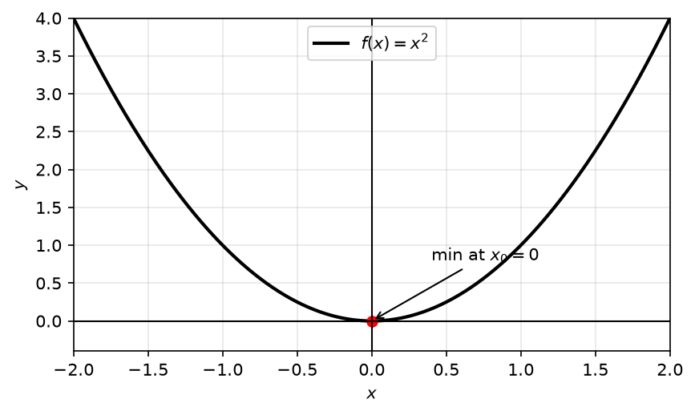
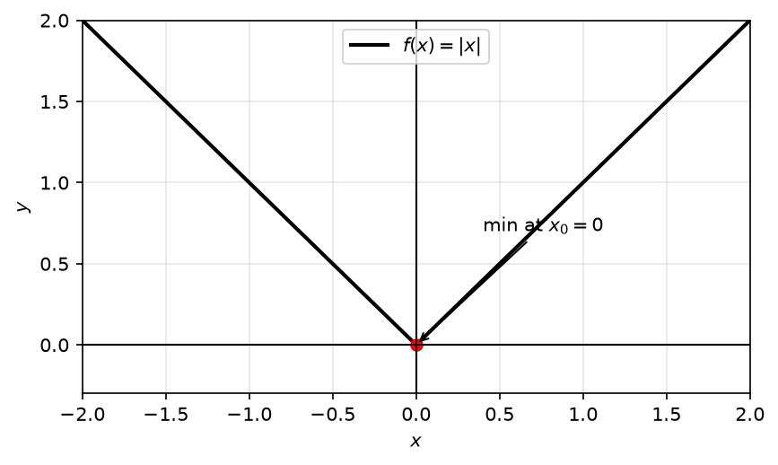
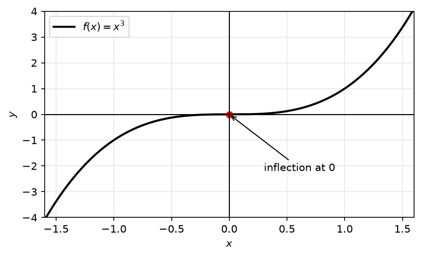
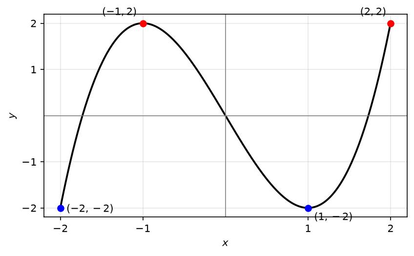
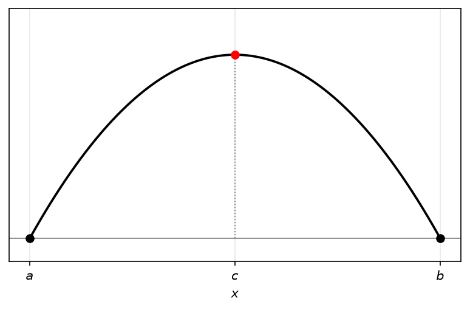
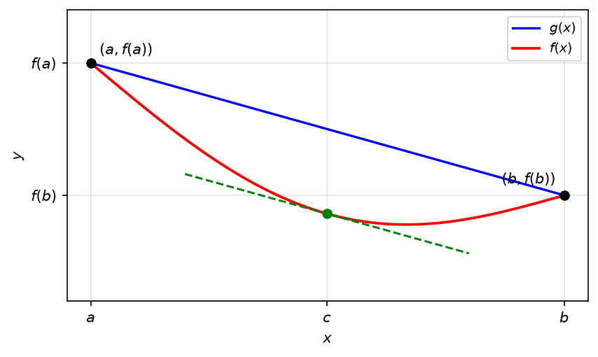
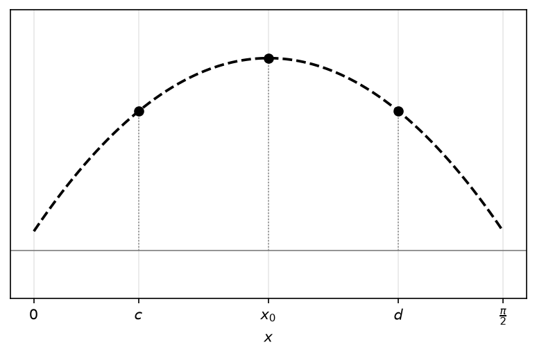

16 שימושים של הנגזרת
16.1 קיצון מקומי ומשפט פרמה
נקודות קיצון מקומיות של פונקציה
\(x_0\) נקראת נקודת מקסימום מקומי של \(f\), אם קיימת \(\delta > 0\) כך שלכל \(x \in (x_0 - \delta, x_0 + \delta)\) מתקיים: \[f(x) \leq f(x_0)\]
\(x_0\) נקראת נקודת מינימום מקומי של \(f\), אם קיימת \(\delta > 0\) כך שלכל \(x \in (x_0 - \delta, x_0 + \delta)\) מתקיים: \[f(x) \geq f(x_0)\]
\(x_0\) נקראת נקודת קיצון מקומי של \(f\), אם \(x_0\) היא נקודת מקסימום מקומי או מינימום מקומי.
דוגמא כללית:
\(x_1, x_3, x_5\)- נקודות מקסימום מקומי של הפונקציה \(x_2, x_4\)- נקודות מינימום מקומי של הפונקציה
תרשים: פונקציה גלית עם חמש נקודות קיצון מקומיות \(x_1,\dots,x_5\)

דוגמאות:
לפונקציה \(f(x) = x^2\) יש רק את נקודת הקיצון המקומי: \(x_0 = 0\)
תרשים: הפרבולה \(f(x)=x^2\) עם מינימום בראשית

לפונקציה \(f(x) = |x|\) יש רק את נקודת הקיצון המקומי: \(x_0 = 0\)
תרשים: גרף \(f(x)=|x|\) בצורת V, מינימום בראשית

לפונקציה \(f(x) = x^3\) אין נקודות קיצון מקומי.
תרשים: גרף \(f(x)=x^3\) העולה דרך הראשית עם נקודת פיתול

משפט 16.1.1.
פרמה
אם \(f(x)\) פונקציה ו-\(x_0\) נקודת קיצון מקומי, ואם \(f\) גזירה ב-\(x_0\) אז \(f'(x_0) = 0\)
טעויות נפוצות:
✗ אם \(x_0\) קיצון מקומי, אז \(f'(x_0) = 0\) דוגמא להבנה: לפונקציה \(f(x) = |x|\) יש קיצון מקומי ב-0, אבל היא אינה גזירה ב-0.
✗ אם \(f'(x_0) = 0\), אז \(x_0\) קיצון מקומי דוגמא להבנה: \(f'(x) = 3x^2 \longrightarrow f'(0) = 0\), הנקודה 0 לא קיצון מקומי.
אם \(f(x)\) פונקציה ו- \(x_0\) נקודת קיצון מקומי, ואם f גזירה ב- \(x_0\) אז \(f'(x_0) = 0\)
טעויות נפוצות:
X אם \(x_0\) קיצון מקומי, אז \(f'(x_0) = 0\)
דוגמא להבנה: לפונקציה \(f(x) = |x|\) יש קיצון מקומי ב-0, אבל היא אינה גזירה ב-0.
X אם \(f'(x_0) = 0\) , אז \(x_0\) קיצון מקומי
דוגמא להבנה: \(f'(x) = 3x^2 \longrightarrow f'(0) = 0\) , הנקודה 0 לא קיצון מקומי.
הוכחה למשפט פרמה
נניח כי \(x_0\) נקודת מקסימום מקומי של f, כלומר קיימת \(\delta > 0\)
כך שלכל \(x_0 - \delta < x < x_0 + \delta\) מתקיים \(f(x) \leq f(x_0)\) \(\longleftarrow\) \(f(x) - f(x_0) \leq 0\)
ידוע כי הגבול הבא קיים
\[f'(x_0) = \lim_{x \to x_0} \frac{f(x) - f(x_0)}{x - x_0}\]
לכן הגבול מימין:
\[f'(x_0) = \lim_{x \to x_0^+} \frac{f(x) - f(x_0)}{x - x_0}\]
אבל הפונקציה בסביבה ימנית היא אי-חיובי, ולכן \(f'(x_0) \leq 0\)
בדומה, הגבול משמאל:
\[f'(x_0) = \lim_{x \to x_0^-} \frac{f(x) - f(x_0)}{x - x_0}\]
והפונקציה בסביבה ימנית היא אי-שלילי, ולכן \(f'(x_0) \geq 0\)
ולכן \(f'(x_0) = 0\)
16.2 מציאת קיצון של פונקציה רציפה בקטע סגור
דוגמא:
דוגמה 16.2.1.
מצאו את הערך המקסימלי והמינימלי של הפונקציה \(f(x) = x^3 - 3x\) בקטע \([-2,2]\) .
פתרון:
הפונקציה היא אלמנטרית ולכן רציפה ב- \([-2,2]\)
אז ממשפט ויירשטראס, קיימות נקודות מקסימום ומינימום לפונקציה בקטע \([-2,2]\)
אם הייתה נקודת מקסימום/ מינימום בפנים הקטע, כלומר לא בקצוות (2,2-), אז היא נקודת קיצון מקומי.
ואז לפי פרמה, כי הפונקציה גזירה בכל IR , בהכרח: \(f'(x_0) = 0\) \[3 \cdot x_0^2 - 3 = 0\] \[x_0 = 1, -1\]
בינתיים, הראינו כי ב (2,2-) אין נקודות מינימום ומקסימום של f, אולי חוץ מ- 1-, 1 . לכן מתוך הרשימה: 2-, 2 , 1- , 1 יש מקסימום ויש מינימום.
כעת נציב ונחשב: \(f(2) = 2\) , \(f(-2) = -2\) , \(f(1) = -2\) , \(f(-1) = 2\)
לסיכום, לפונקציה יש נקודות מקסימום שהן: 1-, 2, ויש נקודות מינימום שהן: 2-, 1
לכן הערך המקסימלי הוא 2 והערך המינימלי הוא 2- .
תרשים: גרף הפונקציה \(f(x)=x^3-3x\) בקטע \([-2,2]\) עם נקודות מקסימום (אדום) ומינימום (כחול)

16.3 משפט רול
משפט 16.3.1.
אם \(f(x)\) רציפה ב- \([a,b]\) ואם \(f(x)\) גזירה ב- (a,b) ואם \(f(a) = f(b)\) , אז קיימת \(c \in (a,b)\) עבורה \(f'(c) = 0\)
תרשים: פונקציה קעורה כלפי מטה מעל \([a,b]\) עם \(f(a)=f(b)\) ונקודת מקסימום ביניהן (משפט רול)

הוכחת משפט רול
מויירשטראס קיימות נקודות מקסימום ומינימום של f ב- \([a,b]\) . נפריד לשני מקרים:
אם המקסימום או המינימום הן לא בקצה של \([a,b]\), אז זו נקודת קיצון מקומי של f, והרי f גזירה ב- (a,b) , לכן שם \(f'(x_0) = 0\)
אם גם המקסימום וגם המינימום הם בקצוות, בגלל ש \(f(a) = f(b)\) אז f קבועה ב- \([a,b]\), ואז לכל \(c \in (a,b)\) : \(f'(c) = 0\) .
16.4 משפט לגראנז’
משפט 16.4.1.
אם \(f(x)\) רציפה ב- \([a,b]\) וגזירה ב- (a,b) , אז קיימת נקודה \(c \in (a,b)\) עבורה: \[f'(c) = \frac{f(b) - f(a)}{b - a}\]
דוגמא:
דוגמה 16.4.2.
חשבו את הגבול של \[\lim_{n \to \infty} (\sin \sqrt{n+1} - \sin \sqrt{n})\]
פתרון:
נסמן \(f(x) = \sin(x)\) , אז \(\sin(\sqrt{n+1}) - \sin(\sqrt{n}) = f(\sqrt{n+1}) - f(\sqrt{n})\)
הפונקציה f רציפה ב- \([\sqrt{n}, \sqrt{n+1}]\) וגזירה בקטע הפתוח, לכן ממשפט לגראנג’ קיימת \(\sqrt{n} < c < \sqrt{n+1}\) עבורה \(\frac{f(\sqrt{n+1}) - f(\sqrt{n})}{\sqrt{n+1} - \sqrt{n}} = f'(c)\)
ולכן \[f(\sqrt{n+1}) - f(\sqrt{n}) = (\sqrt{n+1} - \sqrt{n}) \cdot \cos(c) = \frac{1}{\sqrt{n+1} + \sqrt{n}} \cdot \cos(c) \to 0\]
לכן \(\sin \sqrt{n+1} - \sin \sqrt{n} \to 0\)
הוכחת משפט לגראנג’
נבנה פונקציה חדשה g(x), מאוד פשוטה, המסכימה עם f(x) בקצוות: \[g(x) = \left( \frac{f(b) - f(a)}{b - a} \right) \cdot (x - a) + f(a)\]
ונזכור כי: \(g(a) = f(a)\) , \(g(b) = f(b)\)
נגדיר פונקציה \(h(x) = g(x) - f(x)\) : עבורה \(h(a) = h(0) = 0\) והרי h היא חיסור של g,f. ולכן היא פונקציה רציפה ב- \([a,b]\) וגזירה ב- (a,b) , כי f,g, הן הן כאלה.
אז ממשפט רול, קיימת \(a < c < b\) עבורה \(0 = h'(c) = g'(c) - f'(c)\) \[f'(c) = \frac{f(b) - f(a)}{b - a}\]
תרשים: הוכחת משפט לגראנג’ — המיתר \(g(x)\) בין הקצוות, העקומה \(f(x)\) מתחתיו, ומשיק מקווקו ב-\(c\) המקביל למיתר

16.5 מסקנות ממשפט לגראנז’ — מונוטוניות
משפט 16.5.1.
מסקנה ממשפט לגראנג’
אם \(f(x)\) גזירה ב- \(I = (a,b)\), אז:
א) \(f(x)\) מונוטונית עולה ב- \(I\) אם ורק אם לכל \(x \in I\) : \(f'(x) \geq 0\)
\(f(x)\) מונוטונית יורדת ב- \(I\) אם ורק אם לכל \(x \in I\) : \(f'(x) \leq 0\)
ב) אם \(f'(x) > 0\) לכל \(x \in I\) , אז \(f(x)\) מונוטונית עולה ממש ב- \(I\). אם \(f'(x) < 0\) לכל \(x \in I\) , אז \(f(x)\) מונוטונית יורדת ממש ב- \(I\) .
הוכחה לסעיף (א)
אם f מונוטונית עולה ב- \(I\) , אז \[f'(x_0) = \lim_{x \to x_0} \frac{f(x) - f(x_0)}{x - x_0}\]
וכאשר \(x > x_0\) : \(\frac{f(x) - f(x_0)}{x - x_0} \geq 0\) \(\longleftarrow\) \(f'(x_0) \geq 0\)
בכיוון השני- נניח כי \(f'(x_0) \geq 0\) לכל \(x \in I\) , נראה שאם \(x_1 < x_2\) אז \(f(x_1) \leq f(x_2)\)
כלומר: \(0 \leq f(x_2) - f(x_1)\)
נפעיל את לגראנג’ על f ב- \([x_1, x_2]\), שם היא גזירה ורציפה, ונקבל שקיימת \(x_1 < c < x_2\)
עבורה \(f'(c) = \frac{f(x_2) - f(x_1)}{x_2 - x_1}\) ולכן \(f(x_2) - f(x_1) \geq 0\) \(\longleftarrow\) \(f(x_2) \geq f(x_1)\)
תרגיל (1)
הוכיחו כי לכל \(x \in \mathbb{R}\): \[|\sin(x)| \leq |x|\]
פתרון:
עבור \(x=0\) מתקיים שוויון
עבור \(x \neq 0\) אי השוויון שקול ל: \[\left|\frac{\sin(x)}{x}\right| \leq 1\]
נשים לב כי \[\frac{\sin(x)}{x} = \frac{\sin(x) - \sin(0)}{x - 0}\]
עבור הפונקציה \(f(x) = \sin(x)\) בקטע בין \(0\) ל-\(x\): \[\frac{\sin(x) - \sin(0)}{x - 0} = f'(c)\]
ולכן קיימת \(c\) כלשהיא בין \(0\) ל-\(x\), אבל \(|f'(c)| = |\cos(c)| \leq 1\) \[\left|\frac{\sin(x)}{x}\right| \leq 1\]
תרגיל (2)
הראו כי למשוואה \(\sin(x) + \cos(x) = x\) יש פתרון יחיד ב-\(\left(0, \frac{\pi}{2}\right)\)
תרשים: עקומה מקווקוות (פרבולה הפוכה) מעל הקטע \(\left[0,\frac{\pi}{2}\right]\) עם הנקודות \(c\), \(x_0\), \(d\) (תרגיל היחידות)

פתרון:
נרצה להראות שלמשוואה \(\sin(x) + \cos(x) - x = 0\) יש פתרון ב-\(\left(0, \frac{\pi}{2}\right)\)
נסמן \(f(x) = \sin(x) + \cos(x) - x\), זו רציפה ב-\(\mathbb{R}\) ובפרט ב-\(\left[0, \frac{\pi}{2}\right]\)
ומתקיים: \[f\left(\frac{\pi}{2}\right) = 1 - \frac{\pi}{2} < 0 \quad , \quad f(0) = 1 > 0\]
ולכן לפי משפט ערך הביניים, קיימת \(c \in \left(0, \frac{\pi}{2}\right)\) עבורה \[f(c) = \sin(c) + \cos(c) - c = 0\]
נשאר להראות כי אין עוד פתרון ב-\(\left(0, \frac{\pi}{2}\right)\):
נניח בשלילה שקיים פתרון נוסף, כלומר קיימת \(d \in \left(0, \frac{\pi}{2}\right)\) בגלל ש \(f(c) = f(d) = 0\) אז נפעיל את משפט רול (כי \(f\) גזירה בין \(c\) ל-\(d\)) ונקבל שקיימת נקודה \(x_0\) בין \(c\) ל-\(d\) עבורה \(f'(x_0) = 0\)
נחשב: \[f'(x) = \cos x - \underset{>0}{\sin x} - 1\]
אבל לכל \(x \in \left(0, \frac{\pi}{2}\right)\): \(\sin(x) > 0\) , \(\cos(x) - 1 \leq 0\) ולכן \(f'(x) < 0\) בסתירה ל-\(f'(x_0) = 0\)
16.6 משפט קושי
אם \(f, g\) רציפות ב-\([a,b]\) וגזירות ב-\((a,b)\), ואם \(g'(x) \neq 0\) לכל \(x \in (a, b)\)
אז קיימת נקודה \(c \in (a, b)\) עבורה \[\frac{f'(c)}{g'(c)} = \frac{f(b) - f(a)}{g(b) - g(a)}\]
משפט קושי עבור \(g(x) = x\) זה בדיוק משפט לגראנג’.
ההוכחה של משפט קושי דומה מאוד להוכחה של משפט לגראנג’, בעזרת בניית העזר: \[h(x) = f(x) - \frac{f(b) - f(a)}{g(b) - g(a)} \to (g(x) - g(a))\]
16.7 כלל לופיטל (\(0/0\))
עונה על הצורך לחשב גבולות מהצורה \(\left[\frac{0}{0}\right]\)
נניח כי נרצה לחשב \[\lim_{x \to x_0} \frac{f(x)}{g(x)} = ?\]
כאשר \(f, g\) רציפות בסביבה של \(x_0\) , וגזירות שם וגם \(f(x_0) = g(x_0) = 0\)
נסתכל על: \[\frac{f(x)}{g(x)} = \frac{f(x) - f(x_0)}{g(x) - g(x_0)} = \frac{f'(c)}{g'(c)}\]
הערה (מהמקור): קיימת \(c\) בין \(x\) ל-\(x_0\).
אם \(f, g\) רציפות בסביבה מנוקבת של \(x_0\) , וגזירות בסביבה הזו,
ואם \(\lim_{x \to x_0} g(x) = 0 = \lim_{x \to x_0} f(x)\) וגם \(g'(x) \neq 0\) לכל \(x\) בסביבה הזו,
אז אם הגבול \(\lim_{x \to x_0} \frac{f'(x)}{g'(x)}\) קיים, אז \[\lim_{x \to x_0} \frac{f(x)}{g(x)} = \lim_{x \to x_0} \frac{f'(x)}{g'(x)}\]
דוגמאות:
- חשבו את \[\lim_{x \to 0} \frac{\sin(x)}{x}\]
פתרון:
נסמן \(g(x) = x\) , \(f(x) = \sin(x)\)
אלה רציפות וגזירות ב-\(\mathbb{R}\) ולכן בסביבה של \(x_0 = 0\) ,
בנוסף \(f(0) = g(0) = 0\) לכל \(x\) בסביבה, מתקיים \(g'(x) = 1 \neq 0\)
ולסיום נבדוק את \[\lim_{x \to 0} \frac{f'(x)}{g'(x)} = \lim_{x \to 0} \frac{\cos(x)}{1} = 1\]
לפי לופיטל: \[\lim_{x \to 0} \frac{\sin(x)}{x} = \boxed{1}\]
הערה (מהמקור): מתחה שהגבול אכן קיים — הקושרת את \(\lim_{x \to 0} \frac{f'(x)}{g'(x)}\) אל \(\lim_{x \to 0} \frac{\sin(x)}{x}\).
- חשבו את \[\lim_{x \to 0} \frac{\ln(1 + x)}{x}\]
פתרון:
נסמן \(g(x) = x\) , \(f(x) = \ln(1 + x)\)
אלה רציפות וגזירות בסביבה של הנקודה \(x_0 = 0\) וגם \(f(0) = g(0) = 0\) ו- \(g'(x) = 1 \neq 0\)
ולכן נקבל \[\lim_{x \to 0} \frac{\ln(1 + x)}{x} = \lim_{x \to 0} \frac{f'(x)}{g'(x)} = \lim_{x \to 0} \frac{\frac{1}{1+x}}{1} = \boxed{1}\]
הערה (מהמקור): מתחה שהגבול אכן קיים.
16.8 כלל לופיטל (\(\infty/\infty\))
\[\lim_{x \to \square} \frac{f(x)}{g(x)} =\]
\(\square\) יכול להיות: \(x_0^-, x_0^+, x_0, \infty, -\infty\)
\[\lim_{x \to \square} f(x) = \infty\] \[\lim_{x \to \square} g(x) = \infty\]
\[\longrightarrow \quad \frac{f}{g} = \frac{\left(\frac{1}{g}\right)}{\left(\frac{1}{f}\right)}\]
דוגמאות:
- חשבו את \[\lim_{x \to \infty} \frac{x^3}{e^x}\]
פתרון:
נסמן \(g(x) = e^x\) , \(f(x) = x^3\)
הן גזירות ורציפות ב-\(\mathbb{R}\) ובפרט ב-\([1, \infty)\)
בנוסף \(\lim_{x \to \infty} f(x) = \lim_{x \to \infty} g(x) = \infty\) וגם \(g'(x) = e^x \neq 0\) לכל \(x \in \mathbb{R}\)
ולכן נקבל \[\lim_{x \to \infty} \frac{x^3}{e^x} = \lim_{x \to \infty} \frac{f'(x)}{g'(x)} = \lim_{x \to \infty} \frac{3x^2}{e^x} = \lim_{x \to \infty} \frac{6x}{e^x} = \lim_{x \to \infty} \frac{6}{e^x} = \boxed{0}\]
הערה (מהמקור): מתחה שהגבול אכן קיים.
- מהו \(\lim_{x \to 0^+} x \cdot \ln(x)\)
פתרון:
\[\lim_{x \to 0^+} x \cdot \ln(x) = \frac{\ln(x) \longrightarrow -\infty}{\frac{1}{x} \longrightarrow \infty}\]
נסמן: \(g(x) = \frac{1}{x}\) , \(f(x) = \ln(x)\)
הן גזירות ורציפות ב-\(\mathbb{R}\) ובפרט ב-\((0,1)\)
ולכן נקבל \[\lim_{x \to 0^+} x \cdot \ln(x) = \lim_{x \to 0} \frac{\ln x}{\left(\frac{1}{x}\right)} = \lim_{x \to 0} \frac{\left(\frac{1}{x}\right)}{\left(-\frac{1}{x^2}\right)} = \lim_{x \to 0} -x = \boxed{0}\]
הערה (מהמקור): מתחה שהגבול אכן קיים.